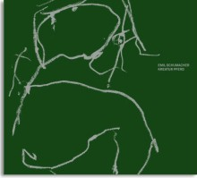

Emil Schumacher
KREATUR PFERDDas Emil Schumacher Museum hat die Ausstellung speziell für das Stadtmuseum Historische Rathaus Warendorf konzipiert und zeigt sie dort in Zusammenarbeit mit dem Kunstkreis Warendorf.
Hg.: Ulrich Schumacher und Rouven Lotz in Zusammenarbeit mit dem Kunstkreis Warendorf
Mit Vorwort von Ulrich Schumacher und Beitrag von Rouven Lotz
60 Seiten, 50 Abbildungen, Leinen-Einband. € 20,- (€ 24,90 im Buchhandel)
ISBN: 978-3-86206-141-9 - erschienen im Verlag Kettler, Dortmund
vergriffen